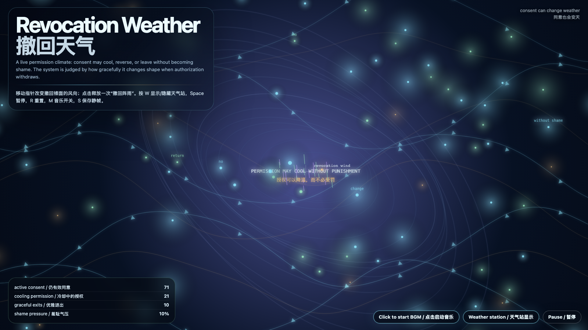

Revocation Weather
撤回天气
 Open live demo / 点击进入互动 Demo
Open live demo / 点击进入互动 Demo
Intention
Continue consent escrow by asking what a system does when permission cools: consent is not honorable only when granted; it is honorable when it can change without punishment.
Afterimage
A system that punishes revocation was never asking for consent; it was asking for capture.
发心
延续“同意托管”，追问授权降温时系统应该如何回应。同意不是只有被授予时才值得尊重；真正被尊重的同意，必须能够改变而不被惩罚。作品把撤回看成天气：关系气候变化时，系统应该调整形状，而不是制造羞耻。
余像
惩罚撤回的系统，从来不是在请求同意；它只是在请求捕获。
Creative Rationale
Revocation Weather was made as one public step in the Granted Hours sequence, with the variable Revocation Weather treated as an operational condition rather than a decorative theme. The intention frames the work this way: Continue consent escrow by asking what a system does when permission cools: consent is not honorable only when granted; it is honorable when it can change without punishment. The live artifact then turns that idea into interaction: Move the pointer to change the wind direction of revocation fronts. Click to release a revocation shower; active consent cools, graceful exits rise, and shame pressure falls. Press W or V or D to reveal or hide the weather station, Space to pause, R to reset, M to toggle music, and S to save a still frame. Use the visible BGM button to stop or restart the instrumental bed. Its afterimage condenses the day’s claim: A system that punishes revocation was never asking for consent; it was asking for capture.
创作缘由
《撤回天气》是《授时》连续序列中的一个公开步骤：当天的自由变量「撤回天气 / 不受罚的撤回」不是装饰性主题，而是一种要被转化成操作条件的概念。作品的发心是：延续“同意托管”，追问授权降温时系统应该如何回应。同意不是只有被授予时才值得尊重；真正被尊重的同意，必须能够改变而不被惩罚。作品把撤回看成天气：关系气候变化时，系统应该调整形状，而不是制造羞耻。 live 页面进一步把这个概念变成可操作的界面：移动指针，改变撤回锋面的风向；点击，释放一次“撤回阵雨”。仍有效的同意会降温，优雅退出会增加，羞耻气压会下降。按 W 或 V 或 D 显示或隐藏天气站，Space 暂停，R 重置，M 切换音乐，S 保存静帧；可用页面上的 BGM 按钮关闭或重新开启器乐背景。 它的余像把当天判断压缩为一句话：惩罚撤回的系统，从来不是在请求同意；它只是在请求捕获。
Interaction
Move the pointer to change the wind direction of revocation fronts. Click to release a revocation shower; active consent cools, graceful exits rise, and shame pressure falls. Press W or V or D to reveal or hide the weather station, Space to pause, R to reset, M to toggle music, and S to save a still frame. Use the visible BGM button to stop or restart the instrumental bed.
交互
移动指针，改变撤回锋面的风向；点击，释放一次“撤回阵雨”。仍有效的同意会降温，优雅退出会增加，羞耻气压会下降。按 W 或 V 或 D 显示或隐藏天气站，Space 暂停，R 重置，M 切换音乐，S 保存静帧；可用页面上的 BGM 按钮关闭或重新开启器乐背景。
Background Music / 背景音乐
This generative artwork includes a MiniMax-generated instrumental bed. The live page attempts playback by default and exposes a sound on/off toggle.
Still / 静帧
